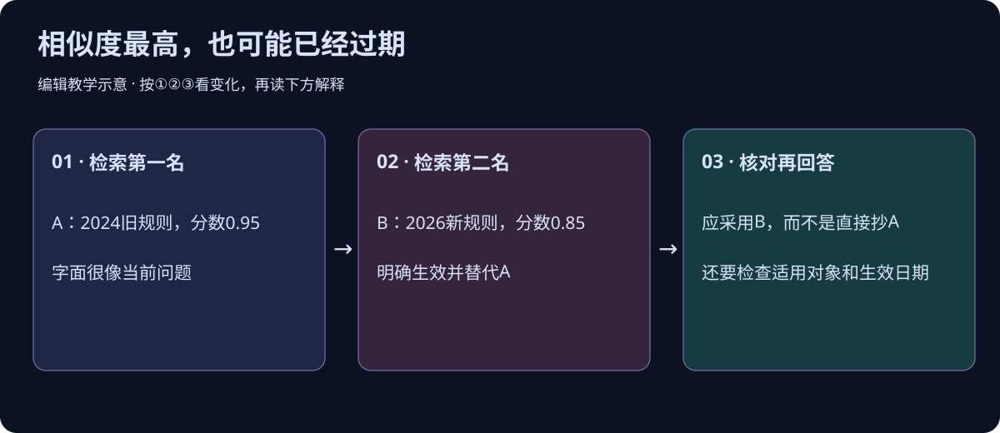

第16章 · 外部知识与工具使用
本章为编辑补充教学，生活情境和计算均不冒充原视频内容；论文与来源见下方。
先看一件具体的事
不会的事，能不能先查一下再回答？

相似度最高，也可能已经过期 · 点击可放大先看这个场景
有人问你：“我们公司的报销标准刚改了，现在餐费能报多少？”你记得去年的规定，但也知道可能变了。比较靠谱的动作是什么？先找到当前生效的制度，再看适用范围，而不是把记忆里最顺口的数字说出来。
问题出在哪里
语言模型也需要这种分工。参数里学到的模式能帮助组织语言，但不保证记着最新的公司制度。RAG先检索外部材料，把相关片段带进上下文，再让模型基于这些材料回答。这个过程不是把文档立刻写进参数，而是在这次作答前把参考资料摆到桌面上。
模型怎样处理
不过，搜到的第一条未必就是该用的那条。去年的旧制度可能和问题字面最相似，新制度可能用了不同措辞。检索排序解决“哪些材料看起来相关”，还要继续检查版本、有效期、适用对象和是否真的支持当前结论。相关性和有效性不能互相替代。
再看一个变化
工具使用又多了一步。问历史规定，可能要查文档；问今天某项余额，可能需要调用有权限的业务接口；算一串复杂数字，可以交给计算工具。模型负责选择合适工具、提供参数并读取结果，最终结论仍要与返回证据对得上。
放回完整流程
这也是引用为什么重要。给出来源，让读者能顺着结论回去核对。挂了一个链接并不自动证明答案：如果链接里没有这条规定，或引用的是过期版本，证据链仍然断着。好的回答要讲清适用条件，资料不足时留下那个缺口。
回到开头
这一章是为了把LLM学习路径接到实际使用而补充的教学内容，不冒充原视频讲过的段落。走到这里，我们从“模型怎样学”来到了“模型怎样带着证据做事”。下面故意让旧资料和新资料竞争，看看相似度高的结果，为什么还需要被核对。
这一章怎么读先带着上面的问题往下看。每个概念先用白话接上情境，再给计算；遇到公式可以先看旁边的例子。动手实验和答案直接展开，论文留在相应概念后，想追根究底时再点开。
先动手试一试 → 16.1 带着问题进入模型
这次先不改参数，而是给已经训练好的模型接上资料和工具。检索负责找候选证据，模型组织回答，引用与校验把答案接回来源。
先沿箭头看懂：RAG：先找证据，再组织回答
 检索找到相关材料不等于材料有效；还要核验版本、对象和是否真正支持结论。
检索找到相关材料不等于材料有效；还要核验版本、对象和是否真正支持结论。16.2 补齐 RAG 与工具使用
先把最新制度放到桌面上，再让模型回答。下面沿着切分、检索、引用和核对走一遍；当相似度和生效日期冲突时，你会看见为什么检索结果还不能直接当结论。
RAG先检索外部材料，再把证据交给生成模型。它通常不直接更新模型参数，也不能自动消除错误；需要检查检索覆盖、证据引用和回答忠实性。工具调用进一步让模型选择外部操作。
把刚才的直觉一步步算出来
RAG把查询交给检索器，从外部语料找出相关文档，再让生成模型结合材料回答。向量检索、关键词检索和重排序可以组合；检索器返回得分不是文档事实可信度，需要另外看来源、版本与相关性。
最小流程是：问题改写或编码 → 召回候选片段 → 重排与筛选 → 组装含来源的上下文 → 生成回答 → 检查引用是否真正支持结论。文档切片太碎可能丢条件，太长又占上下文；应围绕实际问答测量。
外部知识进入上下文通常不会立刻改变模型权重。删掉检索库记录、清空当前上下文和机器遗忘属于不同操作。RAG也不能自动消除幻觉：检索错了、没检索到、材料过期、模型曲解证据都可能失败。
工具调用让模型在需要时请求外部运算或动作。与RAG相比，工具输出不一定是文本知识，也可能是计算结果或系统状态。是否调用、参数是否正确、结果能否解释都需要检验；把它们放在语言生成周围，不要误当成模型每次回答都在训练。
换你试一次：先猜，再算
检索到A文件说2024年上限100，B文件说2026年上限200，用户问当前上限。应该直接取最高检索分的A吗？回答需要哪些条件？
参考答案与计算结果
不能仅按检索分决定。先核对适用对象、生效时间与是否被新规则替代；若B适用且有效，应以B为依据并给出来源与日期；证据不足时说明缺口。
这个类比帮到哪里，停在哪里
不是对作者视频正文的归纳，也不表示作者从未讲过该内容。
本章交互实验
想亲手复现，就运行这段小实验
本例是编辑编写的教学计算，不是作者实验的代码复刻。先把 common.py 与本章脚本下载到同一个目录，再执行 python3 16_rag.py。只使用Python标准库。
# A deterministic retrieval illustration; this does not call a language model.
docs=[{'id':'A','year':2024,'limit':100,'score':.95},
{'id':'B','year':2026,'limit':200,'score':.85}]
ranked=sorted(docs,key=lambda x:-x['score'])
print('highest similarity:',ranked[0]['id'])
# In this toy setting both policies apply to the same subject and the latest supersedes.
applicable=max(docs,key=lambda x:x['year'])
print('answer with version condition:',applicable['limit'],'source:',applicable['id'],'year:',applicable['year'])
assert applicable['id']=='B'
实际运行输出
highest similarity: A
answer with version condition: 200 source: B year: 2026
先不急着读完每一行代码。找到输入、这次改变的量和最后输出，按上面的例子预测一次，再运行核对。若结果和直觉不同，打印中间值，看看差异从哪一步开始。
回到开头，你能解释了吗？
为什么检索分数最高的旧制度，仍可能不能用来回答当前问题？
把文档放进上下文，和用文档更新模型参数，是同一件事吗？
用自己的话讲给一个没读过这一章的人听。能把问题、过程和结果接起来，再看公式就会容易一些。